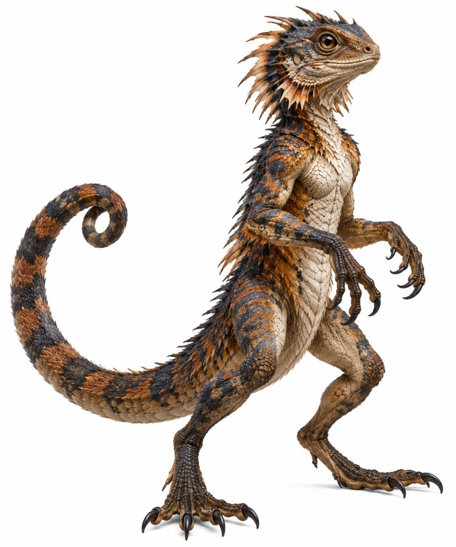

Skarith
Agama-sized lizards with monkey-like prehensile tails. They live in every city on Ishphaeno.
- Group
- Urban
- Tags
- pest cities
- Form
- Agama phenotype and size, with a prehensile tail used for swinging and climbing. Excellent climbers that can stand upright. Canon
- Temperament
- Monkey-like curiosity that makes them bold around people and buildings. Canon
- Range
- Every city across Ishphaeno. They spread with civilization. Canon
Place in the world
- They fill the role pigeons, rats and gulls fill on Earth. Canon
- They belong to no wild food web in practice. Their niche is entirely parasitic on settlements. Canon
- Sky-captains sometimes carry a cage of them as tribute for hungry Vorunith. Proposed
